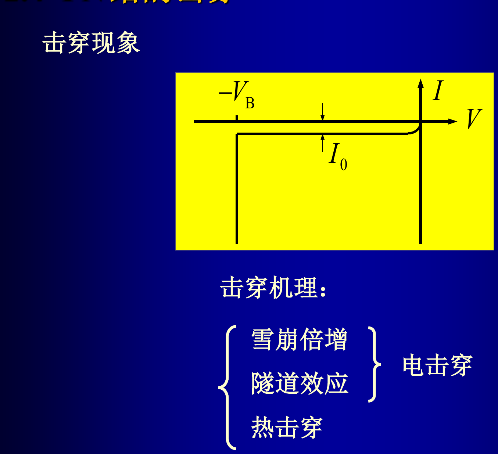
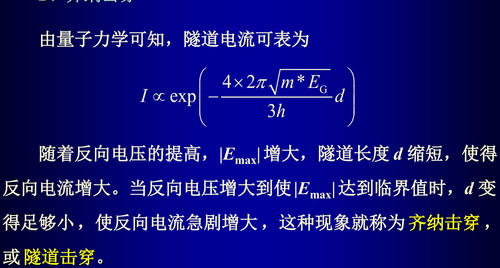
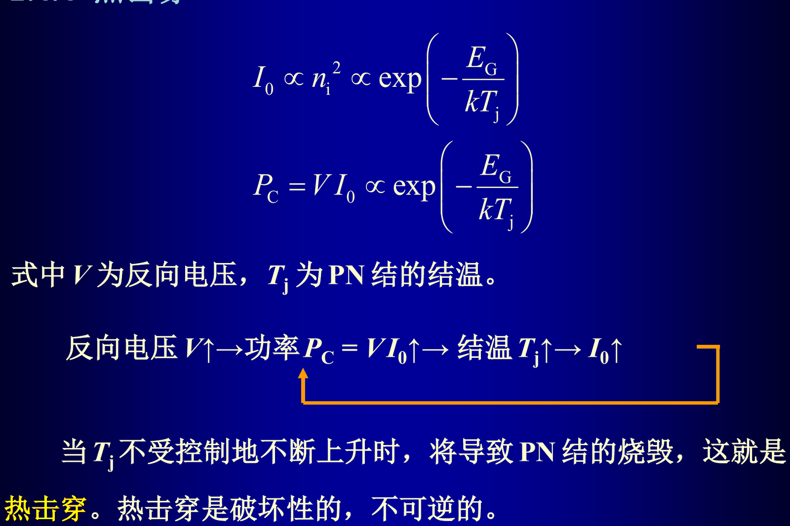

2.12 PN 结雪崩击穿的机理、雪崩击穿电压的计算及影响因素、齐纳击穿的机理及特点、热击穿的机理
考纲第 12 条。碰撞电离与雪崩倍增因子、雪崩击穿条件与击穿电压计算、结构与结深的影响、齐纳隧道击穿、热击穿。
一句话抓住
反向电压升高 ⟹ 耗尽区电场升高。电场足够高时发生两种电击穿：载流子碰撞电离产生倍增（雪崩），或价带电子隧穿势垒（齐纳）。
雪崩击穿是电击穿、可逆；热击穿是烧毁、不可逆。
1. 三种击穿机理总览#
| 雪崩击穿 | 齐纳击穿（隧道击穿） | 热击穿 | |
|---|---|---|---|
| 机理 | 载流子在强场中获得足够能量发生碰撞电离，产生电子空穴对并倍增 | 势垒很薄，价带电子隧穿到导带 | 反向电流产生焦耳热，结温升高使 增大，功率更大，形成正反馈 |
| 条件 | 隧道长度 足够小 | ||
| 发生电压 | 一般 （硅约 7 V 以上） | 一般 （硅约 5 V 以下） | 与散热条件有关 |
| 对应掺杂 | 低掺杂、低梯度 | 高掺杂、高梯度 | — |
| 温度系数 | 正（ 升高 增大） | 负 | 正温度系数 |
| 可逆性 | 可逆（只要不热烧毁） | 可逆 | 不可逆，结烧毁 |
一句话答题模板
"齐纳管具有负温度系数，雪崩管具有正温度系数。" 要做出不随温度变化的稳压管，就利用两者温度系数相反的特性，把齐纳管与雪崩管串联（或采用温度补偿结构），让温度漂移相互抵消。

2. 碰撞电离率与雪崩倍增因子#
电子（或空穴）在两次碰撞之间从电场获得的能量：
当 时，被碰撞的价带电子可跃迁到导带，产生一对新的电子空穴对，这就是碰撞电离。
碰撞电离率 （或 ）：一个自由电子（或空穴）在单位距离内通过碰撞电离产生的新电子空穴对数目。
与电场强烈相关，且与禁带宽度成反比（ 越小越容易碰撞电离，所以锗比硅容易）。
雪崩倍增因子 的定义：包括碰撞电离作用在内的流出耗尽区的总电流，与未发生碰撞电离时的原始电流之比。设 ，对空穴电流增量从 积分到 得
其中 称为电离率积分。
3. 雪崩击穿条件#
公式中的每个量
- —— 碰撞电离率（，单位距离产生的新电子空穴对数）
- —— 经验常数（—，随材料与载流子类型不同）
- —— 耗尽区内的电场（）
- —— 雪崩倍增因子（无量纲， 即击穿）
- —— 耗尽区宽度（，积分从耗尽区一端到另一端）
- —— 原始（未倍增）电流密度（，通常即反向饱和电流密度）
- —— 禁带宽度（，硅 1.12、锗 0.66）
工程近似：临界电场
随 变化极其剧烈，只有电场峰值附近很小区域对积分有贡献。因此可以近似认为：当 达到临界电场 时即发生雪崩击穿。 硅 PN 结的典型值 （另有资料给 ，按题目给定值取）。
4. 雪崩击穿电压的计算#
4.1 解题四步（老师总结）#
- 用泊松方程求出最大电场与空间电荷区宽度的关系；
- 用相似三角形性质：面积比正比于对应边长比的平方（或反过来）；
- 注意实际掺杂区厚度小于由泊松方程确定的 的情况（此时电场分布是梯形而不是三角形）；
- 首要前提：能准确画出空间电荷区内的电场分布图。
三条恒成立的规律
- 击穿时临界电场 恒定，但 变化时电场曲线包围的面积变化，因而 变化；
- 电场强度的变化斜率始终由泊松方程决定（除非掺杂浓度改变）；
- 反向电压主要降落在低掺杂区和本征层，重掺杂区 近似为 0、压降近似为 0；
- 反偏电压较大时可忽略 ，直接用 代替 。
4.2 突变结#
由 §2.4 的 ，令 、忽略 ：
结论：约化杂质浓度 越低， 越高。 单边突变结的 就是低掺杂一侧的浓度，因此击穿电压取决于低掺杂一侧。
4.3 线性缓变结#
由 ，令 ：
结论：杂质浓度梯度 越小， 越高。
公式中的每个量
- —— 雪崩击穿电压（，反偏下）
- —— 临界击穿电场（，硅约 ）
- —— 约化浓度（，单边结时约等于低掺杂侧浓度）
- —— 击穿时耗尽区宽度（）
- —— 杂质浓度梯度（，线性缓变结）
- —— 半导体介电常数（）
5. 结构对击穿电压的影响#
5.1 高阻区（低掺杂区）厚度的影响#
设 结构中 区厚度为 。当 时，电场三角形被"截去"尾部，损失的面积（小三角形）为
于是
5.2 结面曲率半径的影响#
扩散工艺形成的 PN 结在结面四周和四角会形成柱面与球面。结深 越小 ⟹ 曲率半径越小 ⟹ 电场越集中 ⟹ 越低，且击穿多发生在表面而不是体内。
5.3 提高雪崩击穿电压的四条措施（必背）#
- 掺杂浓度要低、浓度梯度要小；
- 低掺杂区的厚度要足够厚；
- 结深要深（增大曲率半径）；
- 采用台面结构（避免表面曲率集中电场）。
6. 齐纳击穿（隧道击穿）#
价带中能量低于 的 A 点电子有一定几率隧穿到导带 B 点，进入 N 区形成反向电流。A、B 两点间的隧道长度：
两个变化规律（选择题高频）：
| 条件 | 隧道长度 | ||
|---|---|---|---|
| 掺杂恒定、反向电压提高 | 增大 | 增强 | 缩短 |
| 反向电压恒定、掺杂浓度增加 | 缩短 | 增强 | 缩短 |
当 增大到使 足够小，反向电流急剧增大，即发生齐纳击穿。
齐纳与雪崩的判据（表 2-3 的核心结论）
| 对比项 | 齐纳击穿 | 雪崩击穿 |
|---|---|---|
| 单边突变结条件（硅） | ||
| 线性缓变结条件（硅） | ||
| 击穿电压（硅） | ||
| 温度系数 | 负 | 正 |
| 击穿前反向特性 | 电流几乎不随电压变化 | 电流随电压有微小变化 |
通用判据： 为雪崩击穿， 为齐纳击穿；对硅大致对应 7 V 与 5 V。

7. 热击穿#
正反馈：
散热功率与热阻：
| 比较 | 结果 |
|---|---|
| 持续上升，最终烧毁 | |
| 达到平衡， 不变 | |
| 下降 |
防止热击穿最有效的措施是降低热阻 。 材料 越大则 越小、热稳定性越好，因此硅 PN 结的热稳定性优于锗。

反常识但必考
PN 结反向电流极小、功率损耗也极小，一般并不容易发生热击穿。热击穿往往发生在已经出现电击穿、反向电流较大的情况下；或者发生在正向——因为正向电流不但很大，而且也有正的温度系数。
热击穿公式中的量
- —— 结温（，随功耗升高）
- —— 环境温度（）
- —— 结上产生的功率（，）
- —— 散掉的热功率（）
- —— 热阻（，越低越安全）
- —— 热阻率、热导率（—，）
- —— 传热路径长度、横截面积（）
8. 真题演练（2025 期中计算题第 2 题）#
曲线题：完整解法
题目（简述）： 测试一系列 N⁻ 区掺杂浓度相同、厚度 不同的 结与 结所能施加的最大反向电压 ，两者之和 随 变化： 时 ； 时 达到饱和。， 与掺杂无关，忽略 。求：(1) N⁻ 区掺杂浓度；(2) 时两结各自的 ；(3) 浓度改为 后饱和点横坐标与 饱和值。
解题思路
- 饱和的含义： 时两种结构击穿电压相等，之和达到 且不再随 增大，故 。
- 定 ： ⟹ ；又 ⟹ 。
- 定掺杂：由 得 。
- 第 (2) 问： 结 ； 的 结 。
- 第 (3) 问：，浓度约为原来的 0.45 倍 ⟹ （新的饱和点横坐标）；。
关于数字
上式是按教材公式推的参考解（该题未公开标准答案）。关键是掌握方法：饱和点位置给出 ⟹ 用 反解 ⟹ 用 取 ⟹ 用 取掺杂；第 (3) 问只需注意 。
9. 自测#
自测
- 写出雪崩击穿条件，并说明为什么它等价于"最大电场达到临界值 "。
- 硅 单边突变结 ，，，求 与 。
- 若低掺杂区厚度只做到 ，击穿电压变为多少？会出现什么现象？
- 为什么稳压管工作电压在 5～7 V 附近时温度系数最小？
解析要点 2. ；。 3. ，；继续减薄会先穿通。 4. 该电压附近齐纳击穿（负温度系数）与雪崩击穿（正温度系数）同时起作用、相互补偿。